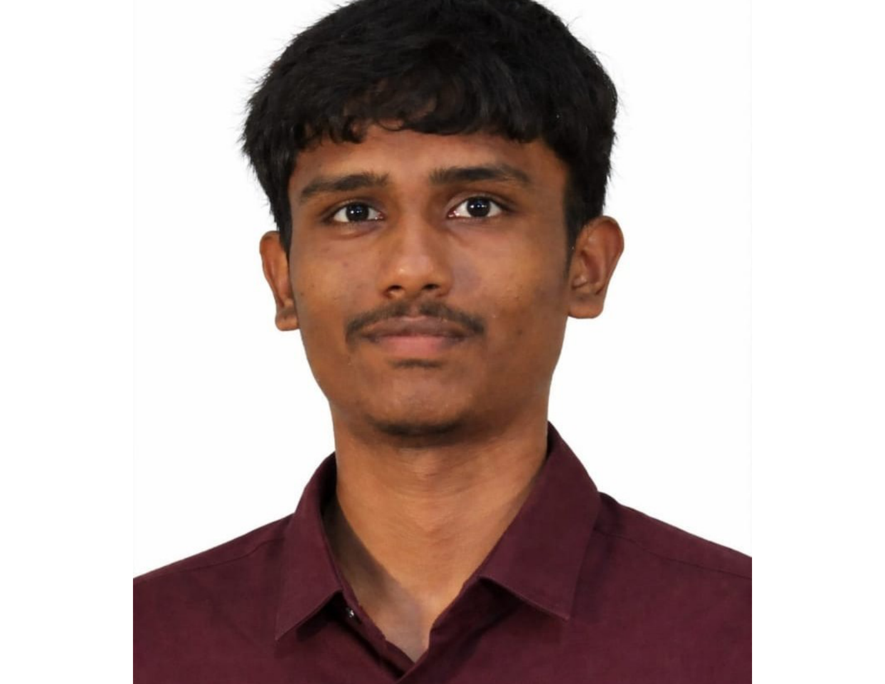

⌨
Programming
PythonCJavaSQL
B.Tech AIML Student · Class of 2028
I’m an Artificial Intelligence and Machine Learning student at SR University, interested in creating practical software solutions and exploring how AI can solve real-world problems.

01 / ABOUT ME
I enjoy turning concepts into working projects and continuously improving my technical foundation.
My academic focus is Artificial Intelligence and Machine Learning. I work with programming, data analysis and machine learning concepts, and enjoy collaborating on projects that connect technology with everyday challenges.
I believe in learning through experimentation, building consistently and staying curious about emerging technologies.
02 / TOOLKIT
A growing toolkit for developing, analyzing and experimenting.
03 / SELECTED WORK
A selection of academic and practical projects. Add verified repository and demo links before publishing.
A software-focused concept for exploring campus microclimate conditions through data, visualization and a digital-twin approach.
An image classification project using a convolutional neural network to recognize handwritten digits.
A text classification project exploring customer review sentiment using TF-IDF features and a Naive Bayes model.
A smart-campus concept for machine status visibility, reservations, notifications and reducing abandoned laundry.
An expense-tracking concept that organizes spending and explores tax calculations for GST, imports and exports.
04 / EDUCATION
Expected 2028
SR University · Currently pursuing
Focused on programming, machine learning, deep learning and software development.2022 – 2025
88.08% · Diploma percentage
05 / GROWTH
Selected learning milestones and academic highlights.
Completed the AWS Training & Certification official practice exam. This is practice-exam completion proof, not the AWS Certified AI Practitioner professional certification.
Add any other completed certifications, awards or hackathon results here once their details and proof are available.
06 / CONTACT
Interested in AI, machine learning, software projects or internship opportunities? I'd be glad to connect.